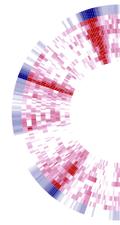
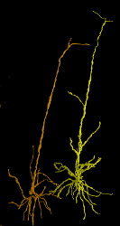
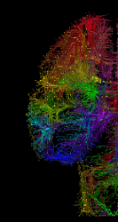

Welcome to the Allen SDK¶
The Allen Software Development Kit houses source code for reading and processing Allen Brain Atlas data. The Allen SDK focuses on the Allen Brain Observatory, Cell Types Database, and Mouse Brain Connectivity Atlas.
Attention
As of October 2019, we have dropped Python 2 support and any files with a py2 dependency (for example analysis files) have been updated.

Allen Brain Observatory¶
The Allen Brain Observatory is a collection of data resources for understanding sensory processing in the mouse visual cortex. These resources systematically measure visual responses in multiple cortical areas and layers using two-photon calcium imaging or high-density extracellular electrophysiology (Neuropixels) probes. Recordings are performed on mice passively viewing visual stimuli or trained to actively perform an image change detection task.
Behavior |
Modality |
Resource |
Initial Release |
|---|---|---|---|
Passive |
Optical physiology |
June 2016 |
|
Passive |
Extracellular electrophysiology |
October 2019 |
|
Active |
Optical physiology |
March 2021 |
|
Active |
Extracellular electrophysiology |
July 2022 |
Experiment and stimulus data are provided in Neurodata Without Borders (NWB) files. The AllenSDK provides code to:
download and organize experiment data according to cortical area, imaging depth, and Cre line
access experiment metadata and data streams
transform and analyze data
More information about each study is provided in the linked pages. A web-based entry point to the Visual Coding – Optical physiology data is available at http://observatory.brain-map.org/visualcoding .

Allen Cell Types Database¶
The Allen Cell Types Database contains electrophysiological and morphological characterizations of individual neurons in the mouse primary visual cortex. The Allen SDK provides Python code for accessing electrophysiology measurements (NWB files) for all neurons and morphological reconstructions (SWC files) for a subset of neurons.
The Database also contains two classes of models fit to this data set: biophysical models produced using the NEURON simulator and generalized leaky integrate and fire models (GLIFs) produced using custom Python code provided with this toolkit.
The Allen SDK provides sample code demonstrating how to download neuronal model parameters from the Allen Brain Atlas API and run your own simulations using stimuli from the Allen Cell Types Database or custom current injections:

Allen Mouse Brain Connectivity Atlas¶
The Allen Mouse Brain Connectivity Atlas is a high-resolution map of neural connections in the mouse brain. Built on an array of transgenic mice genetically engineered to target specific cell types, the Atlas comprises a unique compendium of projections from selected neuronal populations throughout the brain. The primary data of the Atlas consists of high-resolution images of axonal projections targeting different anatomic regions or various cell types using Cre-dependent specimens. Each data set is processed through an informatics data analysis pipeline to obtain spatially mapped quantified projection information.
The Allen SDK provides Python code for accessing experimental metadata along with projection signal volumes registered to a common coordinate framework. This framework has structural annotations, which allows users to compute structure-level signal statistics.
See the mouse connectivity section for more details.
What’s new - 2.16.2¶
See full release notes on Github
Commit code used to create new VBN data release.
Update VBN changelog.
What’s new - 2.16.1¶
See full release notes on Github
Updated testing and readthedocs configuration
Fixed bug in loading trials change times.
What’s new - 2.16.0¶
See release notes on Github
compatibility for python 3.10, 3.11
What’s new - 2.15.0¶
See release notes on Github
What’s new - 2.14.0¶
Support for updated vbn release containing probe, lfp and behavior only data.
Updates to Ophys data in anticipation of a forthcoming updated data release
Various notebook updates
Python 3.9 support
Various bug fixes and quality of life improvements.
What’s new - 2.13.6¶
bugfix when accessing stimulus presentations table for vcn data
updates vbn notebooks
What’s new - 2.13.5¶
Support for visual behavior neuropixels data
What’s new - 2.13.4¶
Bug fix in ecephys
Added support for VBN source density jobs.
Bug fix for pg8000
What’s new - 2.13.3¶
Add ability to extract running speed from mulit-stimulus experiments
Compatible with pandas 1.4
What’s New - 2.13.2¶
Fixes bug that caused file paths on windows machines to be incorrect in Visual behavior user-facing classes
Updates to support MESO.2
Loosens/updates required versions for several dependencies
Updates in order to generate valid NWB files for Neuropixels Visual Coding data collected between 2019 and 2021
What’s New - 2.13.1¶
Fixes bug that was preventing the BehaviorSession from properly instantiating passive sessions.
What’s New - 2.13.0¶
Major internal refactor to BehaviorSession, BehaviorOphysExperiment classes. Implements DataObject pattern for fetching and serialization of data.
What’s New - 2.12.4¶
Documentation changes ahead of SWDB 2021
Bugfix to CloudCache; it is now possible for multiple users to share a cache.
What’s New - 2.12.3¶
Reordered columns in Visual Behavior metadata tables to be more helpful
What’s New - 2.12.2¶
fix to how from_lims API gets OPhys experiment metadata. Preserves relationship between OPhys experiments and failed containers
What’s New - 2.12.1¶
minor fix to cloud cache consistency check
What’s New - 2.12.0¶
Added ability to specify a static cache directory (use_static_cache=True) to instantiate VisualBehaviorOphysProjectCache.from_local_cache()
Added ‘experience_level’, ‘passive’ and ‘image_set’ columns to ophys_experiments_table
Added ‘ophys_cells_table’ metadata table to track the relationship between ophys_experiment_id and cell_specimen_id
What’s New - 2.11.3¶
Bugfixes related to NWB creation for BehaviorSessions
What’s New - 2.11.2¶
Fixed mkdir error for non-existing ecephys upload directory
What’s New - 2.11.1¶
Refactored the schema for the Ecephys copy utility to avoid raising an error when a previous output file already exists.
What’s New - 2.11.0¶
python 3.8 compatibility
CloudCache (the class supporting cloud-based data releases) is now smart enough to construct symlinks between files that are identical across dataset versions (rather than downloading duplicate copies of files).
VisualBehavioOphysProjectCache supports user-controlled switching between dataset versions.
What’s New - 2.10.3¶
Adds restriction to require hdmf version to be strictly less than 2.5.0 which accidentally introduced a major version breaking change
What’s New - 2.10.2¶
This version marks the release of Visual Behavior Optical Physiology data! For more details please visit the: Visual Behavior - Optical Physiology Project Page
Update documentation to support visual behavior data release
Fixes a bug with the dictionary returned by BehaviorSession get get_performance_metrics() method
Adds docstrings to the BehaviorSession get_performance_metrics(), get_rolling_performance_df(), and get_reward_rate() methods
What’s New - 2.10.1¶
Changes name of BehaviorProjectCache to VisualBehaviorOphysProjectCache
Changes VisualBehaviorOphysProjectCache method get_session_table() to get_ophys_session_table()
Changes VisualBehaviorOphysProjectCache method get_experiment_table() to get_ophys_experiment_table()
VisualBehaviorOphysProjectCache is enabled to instantiate from_s3_cache() and from_local_cache()
Improvements to BehaviorProjectCache
Adds project metadata writer
What’s New - 2.9.0¶
Updates to Session metadata; refactors implementation to use class rather than dict internally
Fixes a bug that was preventing Allen Institute Windows users from accessing gratings images
What’s New - 2.8.0¶
Created lookup table to get monitor_delay for cases where calculation from data fails
If sync timestamp file has more timestamps than eye tracking moving has frame, trim excess timestamps (up to 15)
Session API returns both warped and unwarped stimulus images, and both are written to NWB
What’s New - 2.7.0¶
Refactored behavior and ophys session and data APIs to remove a circular inheritance issue
Fixed segmentation mask and roi_mask misregistration in ‘BehaviorOphysSession’
Replaces BehaviorOphysSession.get_roi_masks() method with roi_masks property
Fixes bug which prevented the SDK from loading stimuli dataframes for static gratings
Return event detection data through session API
Read/write event detection data from/to NWB
Time stamps for events in trial_log are set to the exact sync timestamp of the corresponding frame.
For behavior-only sessions, sync-like timestamp of the first frame is set to zero.
Refactored BehaviorOphysSession to inherit methods and properties from BehaviorSession
Fixed a test for checking that Behavior and BehaviorOphysSessions contain the same data regardless of which API (LIMS/JSON/NWB) is used. Also fixed resulting failure cases.
What’s New - 2.6.0¶
Adds ability to write and read behavior only experiments
Adds eye tracking ellipse fits and metadata as new NWB data stream
OPhys Behavior data retrieval methods no longer depend on ROIs being ordered identically in different files.
What’s New - 2.5.0 (January 29, 2021)¶
Adds unfiltered running speed as new data stream
run_demixing gracefully ignores any ROIs that are not in the input trace file
What’s New - 2.4.0 (December 21, 2020)¶
As of the 2.4.0 release: - When running raster_plot on a spike_times dataframe, the spike times from each unit are plotted twice. (thank you @dgmurx) - improvements and fixes to behavior ophys NWB files. - improvements and fixes to BehaviorProjectCache tables including new column “donor_id” - implemented a timeout to obtaining an ecephys session. (thank you @wesley-jones) - big overhaul of how Behavior and BehaviorOphys classes are structured for the visual behavior project. See https://github.com/AllenInstitute/AllenSDK/pull/1789
What’s New - 2.3.2 (October 19, 2020)¶
As of the 2.3.2 release:
(Internal) Fixed a running_processing bug for behavior ophys experiments when the input data would have one more encoder entry than timestamp. The behavior of the code now matches what the warning says.
What’s New - 2.3.1 (October 13, 2020)¶
As of the 2.3.1 release:
(Internal) Fixed a write_nwb bug for behavior ophys experiments involving the BehaviorOphysJsonApi expecting a mesoscope-specific method.
What’s New - 2.3.0 (October 9, 2020)¶
As of the 2.3.0 release:
Visual behavior running speed is now low-pass filtered at 10Hz. The raw running speed data is still available. The running speed is corrected for encoder threshold croissing artifacts.
Support for stimulus gratings for visual behavior.
Fixed an eye-tracking sync problem.
Updates to some visual behavior pynwb implementations.
Adds load sync data for individual plane sets to relate accurate event timings to mesoscope data.
Adds public API method to access the behavior_session_id from an instance of BehaviorOphysSession.
What’s New - 2.2.0 (September 3, 2020)¶
As of the 2.2.0 release:
AllenSDK HTTP engine streaming requests now include a progress bar
ImportError: cannot import name ‘MultiContainerInterface’ from ‘hdmf.container’ errors should now be resolved (by removing explicit version bounds on the hdmf package).
The optical physiology 2-photon trace demixer has been modified to be more memory friendly and should no longer result in out of memory errors when trying to demix very large movie stacks.
What’s New - 2.1.0 (July 16, 2020)¶
As of the 2.1.0 release:
behavior ophys nwb files can now be written using updated pynwb and hdmf
A warning has been added if you are using AllenSDK with outdated NWB files
A new documentation file has been added which will contain Visual Behavior specific terms for quick lookup
What’s New - 2.0.0 (June 11, 2020)¶
As of the 2.0.0 release:
pynwb and hdmf version requirements have been made less strict
The organization of data for ecephys neuropixels Neurodata Without Borders (NWB) files has been significantly changed to conform with NWB specifications and best practices
CCF locations for ecephys neuropixels electrodes are now written to NWB files
Examples for accessing eye tracking ellipse fit and screen gaze location data have been added to ecephys example notebooks
Important Note: Due to newer versions of pynwb/hdmf having issues reading previously released Visual Coding Neuropixels NWB files and due to the significant reorganization of their NWB file contents, this release contains breaking changes that necessitate a major version revision. NWB files released prior to 6/11/2020 are not guaranteed to work with the 2.0.0 version of AllenSDK. If you cannot or choose not to re-download the updated NWB files, you can continue using a prior version of AllenSDK (< 2.0.0) to access them. However, no further features or bugfixes for AllenSDK (< 2.0.0) are planned. Data released for other projects (Cell Types, Mouse Connectivity, etc.) are NOT affected and will NOT need to be re-downloaded